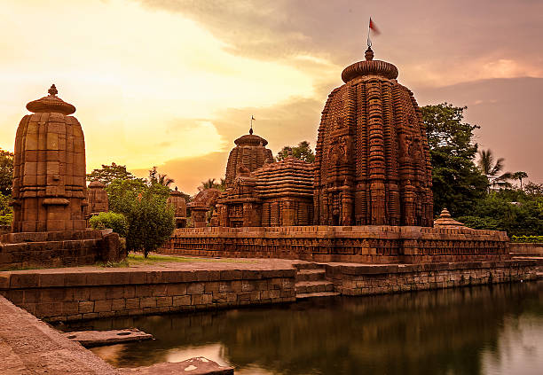

Bhuvaneswari Temple

Bhuvaneswari Temple
Bhubaneswari Temple is a Hindu temple located in Tripura, India, in Rajnagar (55 km from Agartala). Believed to be built in 1660–1675 AD, it is located next to the palace built by Maharaja Govinda Manikya. The temple is mentioned in Rabindranath Tagore's work.
Architecture
The temple reflects the Charchala style architecture of Bengal. There is a flat raised platform over which the chamber is built with a single arch entrance. There is a curved roof with a finial.